ROS2 기초 2차시 - 네트워크와 프로그래밍¶
리눅스CLI 실습
-
rm 파일이나 디렉터 리를 삭제 예) # rm -rf abc
-
cp 파일이나 디렉터 리를 복사 예) # cp abc.txt cba.txt
-
mv 파일과 디렉터 리의 이름을 변경하거나 위치 이동 시 사용 예) mv abc.txt www.txt
-
mkdir 새로운 디렉터 리를 생성 예) # mkdir abc 실습 디렉터 리 생성하기
-
mkdir(make directory) 명령어
- 실습 순서
-
- ls 명령어로animals 디렉터 리 생성
-
- dog, cat, cow 디렉터 리 생성
-
- snake 디렉터 리 생성
-
- -p 옵션을 넣지 않고fruits 디렉터 리 하 위에apple 디렉터 리 생성
-
- -p 옵션을 넣고 생성
-
- -p 옵션으로fruits/apple 디렉터 리를 다시 생성
리눅스CLI 실습
-
rmdir 디렉터 리를 삭제. (단, 비어 있어야함) 예) # rmdir abc
-
cat 텍스트로 작성된 파일을 화면에 출력 예) # cat a.txt b.txt
-
head, tail 텍스트로 작성된 파일의 앞10행 또는 마지막10행만 출력 예) # head /etc/systemd/user.conf
-
more 텍스트로 작성된 파일을 화면에 페이지 단위로 출력 예) # more /etc/systemd/system.conf
-
less more와 용도가 비슷하지만 기능이 더 확장된 명령 예) # less /etc/systemd/system.conf
-
file File이 어떤 종류의 파일인지를 표시 예) # file /etc/systemd/system.conf
-
clear 터미널 화면을 깨끗하게 지워 줌 예) # clear
-
nano 텍스트 편집기
리눅스CLI 실습 일반 파일 이동
- temporary의 파일 확인
- mv 명령어로say-hi 파일의 이름 변경
- greetings 파일의 이름 변경
- 파일 경로 변경
- temporary 디렉터 리 조회
- hello 파일을 현재 작업 디렉터 리로 이동
- 파일 이름 변경 temporary 디렉터 리의 파일 확인
temporary 디렉터리로이동¶
cd ~/temporary
현재디렉터리의파일목록확인¶
ls say-hi 파일의 이름 변경
say-hi 파일의이름을say-hello로변경¶
mv say-hi say-hello greetings 파일의 이름 변경
greetings 파일의이름을welcome으로변경¶
mv greetings welcome 파일 경로 변경
say-hello 파일을다른디렉터리로이동(예: ~/Documents)¶
mv say-hello ~/Documents temporary 디렉터 리 조회
다시temporary 디렉터리로이동한후목록확인¶
cd ~/temporary ls hello 파일을 현재 작업 디렉터 리로 이동
hello 파일을현재디렉터리로이동(예: ~/temporary에서다른위치로이동)¶
mv ~/temporary/hello . # 현재 디렉터 리로 이동 hello 파일의 이름 변경
hello 파일의이름을hi로변경¶
mv hello hi
리눅스CLI 실습 디렉터리 이동
- 현재 디렉터 리 확인
- haha 디렉터 리 생성
- hoho로 이름 변경
- 디렉터 리 위치 이동
- 디렉터리 이동하며hihi로 이름 변경 현재 디렉터 리 확인
현재작업중인디렉터리확인¶
pwd haha 디렉터 리 생성
현재디렉터리에haha라는새디렉터리생성¶
mkdir haha haha 디렉터 리 이름을hoho로변경
haha 디렉터리의이름을hoho로변경¶
mv haha hoho hoho 디렉터 리로 이동
hoho 디렉터리로이동¶
cd hoho 디렉터리 이동과 동시에hihi로 이름 변경
hoho 디렉터리를현재경로에서상위경로로이동시키면서hihi로이름변경¶
mv ../hoho ../hihi
상위디렉터리로이동하여변경된디렉터리확인¶
cd .. ls
리눅스CLI 실습 일반 파일 삭제
- 현재 상태 확인
- say-hi 파일 삭제
- -i 옵션을 주고hello 파일 삭제
- 여러 파일 한꺼번에 삭제 현재 상태 확인
현재디렉터리에있는파일목록을확인¶
ls say-hi 파일 삭제
say-hi 파일을삭제¶
rm say-hi -i 옵션을 주고hello 파일 삭제
hello 파일을삭제할때확인메시지표시¶
rm -i hello
삭제여부를묻는메시지가나오면y를입력해삭제를확정¶
여러 파일 한꺼번에 삭제
예를들어file1.txt, file2.txt, file3.txt 파일을한꺼번에삭제¶
rm file1.txt file2.txt file3.txt 또는, 특정 패턴에 맞는 파일을 모두 삭제할 수 있습니다. 예를 들어, .txt 확장자를 가진 파일 모두 삭제: rm *.txt
리눅스CLI 실습
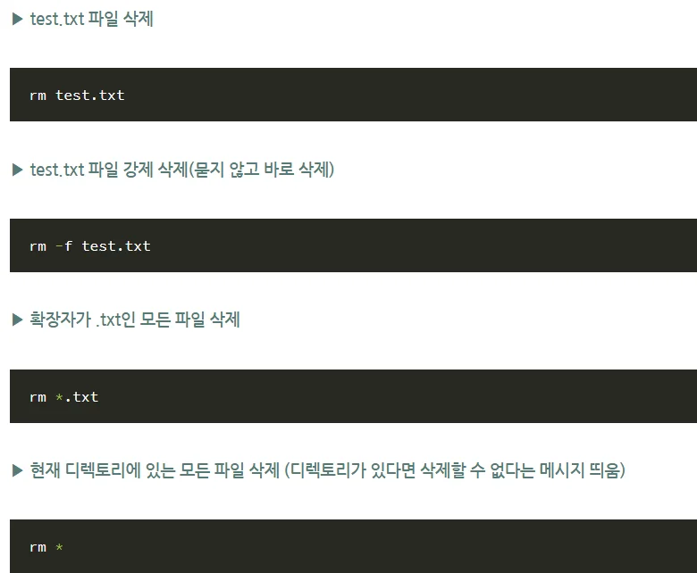
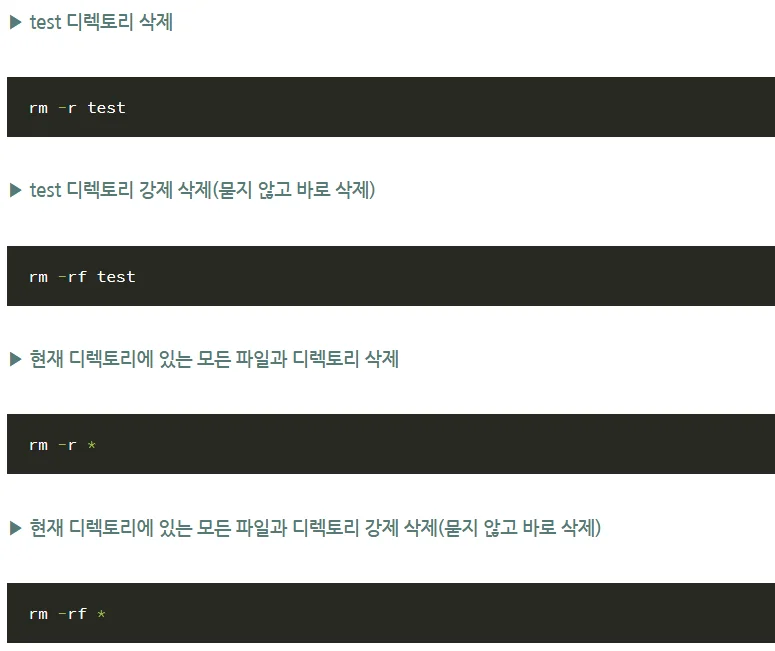
컴퓨터 구조(Booting, CPU 작동 원리, POST) – 복습 프로그램이란 프로그램의 의미는 어떤 작업을 하기 위해 해야할 일들을 순서대로 나열한 것으로 쉽게 말해 컴퓨터에서 어떤 작업을 위해 실행할 수 있는'정적인 상태'의 파일이라고 볼 수 있다. 컴퓨터에서의'프로그램'은 사용자가 원하는 일을 처리할 수 있도록 프로그래밍 언어를 사용하여 올바른 수행 절차를 표현해 놓은 명령어들의 집합이다. 그에 필요한 데이터를 묶어 놓은 파일로 보조 기억 장치에 저장되어 있다. 프로세스(Process)란 무엇인가 프로그램이 실행 되서 돌아가고 있는 상태, 컴퓨터에서 연속적으로 실행되고 있는'동적인 상태'의 컴퓨터 프로그램이다 [특징]
- 프로세스는 각각Code, Data, Stack, Heap의 구조로 되어 있는 독립된 메모리 영역을 할당받는다.
- 다른 프로세스의 자원에 접근하려면 프로세스 간의 통신(IPC)을 사용해야한다.
- 프로세스는 최소 하나 이상의 스레드를 포함한다.
- 각 프로세스는 별도의 주소 공간에서 실행되며, 서로 독자적인 메모리 공간을 갖기 때문에 서로 메모리 공간을 공유할 수 없다. 즉, 다른 프로세스의 변수나 자료 구조에 접근할 수 없다.
컴퓨터 구조(Booting, CPU 작동 원리, POST) - 복습 스레드(Thread)란 무엇인가
- 스레드(Thread)는 프로세스가 할당받은 자원을 이용하는 실행 단위이자, 프로세스의 특정한 수행 경로이자 프로세스 내에서 실행되는 여러 흐름의 단위이다.
- 스레드는 프로세스 내에서 프로세스의 자원을 이용해서 실제로 작업을 수행하는 일꾼이다.
- 스레드가 소속된 프로세스가 운영 체제로부터 자원을 할당받으면 그 자원을 스레드가 사용한다.
- 프로세스는 최소 한 개 이상의 스레드를 가지며 이 스레드를 메인 스레드(main thread)라고 한다. [스레드의 특징]
- 각 스레드는 독자적인 스택(Stack) 메모리를 갖는다.
- 스레드는 프로세스 내에서 각각 스 택만 할당받고Code, Data, Heap 영역은 공유한다.
- 스레드는 한 프로세스 내에서 동작되는 여러 실행의 흐름으로, 프로세스 내의 주소 공간이나 자원들을 같은 프로세스 내의 스레드끼리 공유하며 실행된다.
- 각각의 스레드는 별도의 레지스터와 스택을 갖고 있지만, 힙 메모리는 서로 읽고 쓸 수 있다.
- 한스 레드가 프로세스 자원을 변경하면, 다른 이웃 스레드(sibling thread)도그 변경 결과를 즉시 볼 수 있다.
- 스레드는 메모리를 공유하기 때문에 동기화, 데드 락 등의 문제가 발생할 수 있다.
- 스레드는 대부분의 현대 운영 체제가 지원하고 있으며, 이와 관련된 주요 라이브러리로는POSIX Pthreads, Windows threads, Java threads 가 있다. 프로세스(Process)와스 레드(Thread)
- 프로세스와 스레드의 관계: 프로세스는 스레드의 컨테이너이다. 스레드의 정보를 담고 있는 것에 불과하다.
- 프로세스와 스레드의 차이점: 프로세스는 각 작업(Task)마 다 운영 체제로부터 자원을 할당받기 위해 시스템 콜을 하는 부담이 생기지만 멀티 스레드를 사용한다면 시스템 콜을 한 번만 해도 되기 때문에 효율적이다.
- 또한IPC 방식보다는 스레드 간 통신이 덜 복잡하고 시스템 자원 사용이 더 적으므로 통신의 부담도 줄일 수 있다.
컴퓨터 구조(Booting, CPU 작동 원리, POST) - 복습 멀티 프로세스와 멀티 스레드 멀티 스레딩이란
- 하나의 응용 프로그램을 여러 개의 스레드로 구성하고 각 스 레드로 하여금 하나의 작업을 처리하도록하는 것이다.
- 윈도우, 리눅스 등 많은 운영 체제들이 멀티 프로세싱을 지원하고 있지만 멀티 스레딩을 기본으로 하고 있다.
- 웹 서버는 대표적인 멀티 스레드 응용 프로그램이다. 멀티 스레딩의 장점
- 시스템 자원 소모 감소(자원의 효율성 증대)
- 프로세스를 생성하여 자원을 할당하는 시스템 콜이 줄어들어 자원을 효율적으로 관리할 수 있다.
- 시스템 처리 량 증가(처리 비용 감소)
- 스레드 간 데이터를 주고받는 것이 간단해지고 시스템 자원 소모가 줄어들게 된다.
- 스레드 사이의 작업량이 작아Context Switching이 빠르다.
- 간단한 통신 방법으로 인한 프로그램 응답 시간 단축
- 스레드는 프로세스 내의Stack 영역을 제외한 모든 메모리를 공유하기 때문에 통신의 부담이 적다. 멀티 스레딩의 단점
- 주의 깊은 설계가 필요하다.
- 디버깅이 까다롭다.
- 단일 프로세스 시스템의 경우 효과를 기대하기 어렵다.
- 다른 프로세스에서 스레드를 제어할 수 없다. (즉, 프로세스 밖에서 스레드 각각을 제어할 수 없다.)
- 멀티 스레드의 경우 자원 공유의 문제가 발생한다. (동기화 문제)
- 하나의 스레드에 문제가 발생하면 전체 프로세스가 영향을 받는다. *멀티 프로세스 대신 멀티 스레드를 사용하는 이유는? 프로그램을 여러 개 키는 것보다 하나의 프로그램 안에서 여러 작업을 해결하는 것이 더 효율적이기 때문이다.
API, Library, Framework, Process와Thread API이란 api란Application programming Interface, 응용 프로그램에서 운영 체제나 프로그래밍 언어가 제공하는 기능을 제어할 수 있게 만든 인터페이스이다. 아래와 같이 정해진 정보를 클라이언트가 전해 주면 클라이언트가 원하는 기능을 접근할 프로그램에서 가져올 수 있다, 이런 클라이언트와 프로그램 사이의 다리 역할을 하는 것을api라한다 API의특징
- 구현과 독립적으로 사양만 정의되어 있다
- API에 따라 접근 권한이 필요할 수 있다
- *말 그래도 인터페이스이기에 안에는 무엇이 들어 있는지 알 수 없다
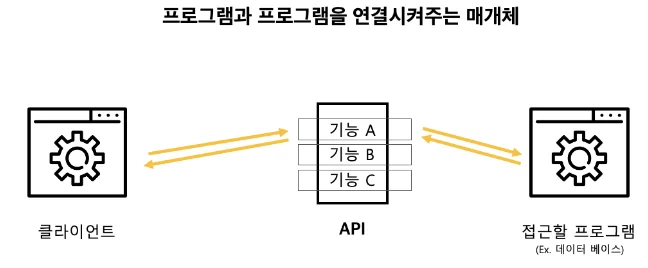
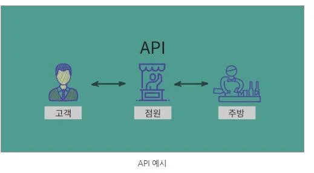
API, Library, Framework, Process와Thread Library이란 응용 프로그램 개발을 위해 필요한 기능(함수)를 모아 놓은 소프트웨어이다. 구성 데이터, 문서, 도움말 자료, 메시지 틀, 미리 작성된 코드, 서브루틴(함수), 클래스, 값, 자료형 등이 포함될 수 있습니다. Library의특징
- 독립성을 가진다-> 해당 라이브러리는 다른 라이브러리를 의지하지 않는다
- 응용 프로그램이 능동적으로 라이브러리를 사용한다-> 응용 프로그램이 필요할 때 라이브러리를 호출한다
- 프로그래머가 어떠한 기능을 수행하기 위해 도움을 주는 또는 필요한 것을 제공해 주는 역할을 하는 것.
- 라이브러리는 재사용이 필요한 기능으로 반복적인 코드 작성을 없애기 위해 언제든지 필요한 곳에서 호출하여 사용할 수 있도록Class나Function으로 만들어진다.
- 프로그램을 만들 때 기존에 만들어진 함수들을 재활용함으로써, 프로그램의 제작 시간과 노력을 줄일 수 있다. 그리고 필요한 함수만 호출하여 사용할 수 있다.
- 독립성을 가지고, 응용 프로그램이 능동적으로 라이브러리를 사용한다. 데이터 시각화 라이브러리 (Matplotlib 기반) 컴퓨터 비전 라이브러리 (이미지 처리, 객체 인식) 데이터 시각화 라이브러리 (Matplotlib 기반) 수학 연산 라이브러리 (행렬, 벡터 연산) 데이터 분석 라이브러리 (NumPy 기반)
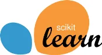
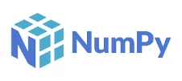
API, Library, Framework, Process와Thread Framework
- 응용 프로그램이나 소프트웨어의 솔루션 개발을 수월하게 하기 위해 제공된 소프트웨어 환경.
- 특정 인프라나 환경에서 동작할 수 있도록 기반 시설을 담당해 주는 것이 프레임워크의 역할이다. Framework의특징
- 응용 프로그램이 수동적으로 프레임워크에 의해 사용된다.
- 뼈대나 기반 구조라는 뜻. 응용 프로그램이나 소프트웨어 구현을 수월하게 하기 위해 제공된 소프트웨어 환경이다.
- 프레임워크만으로 실행되지 않고, 기능을 추가해야하며, 프레임워크에 의존하여 개발해야하고, 프레임워크가 정의한 규칙을 준수해야한다.
- 프로그래밍을 진행할 때 필수적인 코드, 알고리즘 등과 같이 어느 정도 구조를 제공해 주기 때문에 프레임워크를 사용하는 프로그래머는 이 프레임워크 뼈대 위에서 코드를 작성하여 프로그램을 개발한다.
- 프레임워크는 완성된 제품이 아닌 완성된 제품을 만들기 위해 개발자를 도와주는 또는 기반이 되는 역할을 한다. 즉, 소프트웨어의 특정 문제를 해결하기 위해 상호 협력하는 클래스와 인터페이스의 집합
- Google이 개발한 딥 러닝 프레임워크
- GPU 가속 및 확장성이 뛰어남
- Facebook이 개발한 딥 러닝 프레임워크
- 직관적인 코드와 동적 연산 그래프 지원
- 2D/3D 게임 개발에 널리 사용됨
- 다양한 플랫폼(Android, iOS, PC 등) 지원
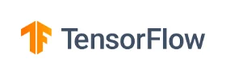
API, Library, Framework, Process와Thread Framework vs. Library 가장 큰 차이점은 이것 없이도 앱이 동작할 수 있는지 여부이다. →응용 프로그램의 흐름 주도권을 누가 가지고 있는가? 라이브러리: 개발자가 코드를 컨트롤합니다. 즉, 개발자가 라이브러리를 호출합니다. 프레임워크: 개발자가 프레임워크의 규칙을 따라 코딩을 합니다. 즉 프레임워크가 개발자를 호출합니다. 라이브러리는 어떤 부분에서 사용되기 때문에 호출하는 측에 주도성이 있다. API와Library 차이점
- API: 컴포넌트를 사용하는 규약 및 호출을 위한 수단으로써 구현 로직이 필요 없음.
- 라이브러리: 컴포넌트 자체로써, 구현 로직이 존재
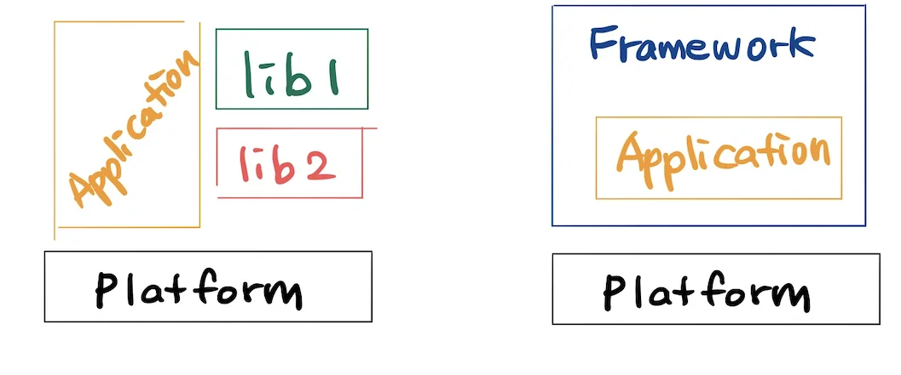
API, Library, Framework, Process와Thread HTTP와HTTPS란? HTTP(Hypertext Transfer Protocol)는 클라이언트와 서버 간 통신을 위한 통신 규칙 세트 또는 프로토콜입니다. 사용자가 웹 사이트를 방문하면 사용자 브라우저가 웹 서버에HTTP 요청을 전송하고 웹 서버는 HTTP 응답으로 응답합니다. 웹 서버와 사용자 브라우저는 데이터를 일반 텍스트로 교환합니다. 간단히 말해HTTP 프로토콜은 네트워크 통신을 작동하게하는 기본 기술입니다. 이름에서 알 수 있듯이HTTPS(Hypertext Transfer Protocol Secure)는HTTP의 확장 버전 또는 더 안전한 버전입니다. HTTPS에서는 브라우저와 서버가 데이터를 전송하기 전에 안전하고 암호화된 연결을 설정합니다. 플라스크(Flask)는 웹 프레임워크 웹 프레임워크를 실질적인 웹 서비스로 제공했을 시 웹 접속자의 접속 및 통신이 어떻게 이루어지는가를 생각해 보고 이러한 통신에 대한 지식을 바탕으로ROS를 이해한다
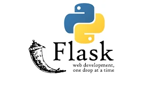
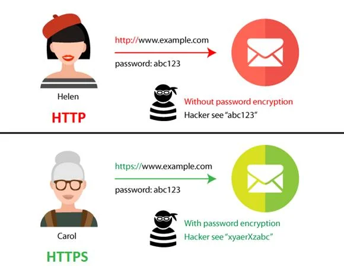
인터프리터, 컴파일러(소스 코드→ Build → 실행 파일) 소스 코드란? 소스 코드는 컴퓨터 소프트웨어(프로그램)의 제작에 사용되는 설계도이다. 개념만 나타낸 추상적인 설계도가 아니라(그런 건 순서도라고 한다), 당장 컴퓨터에 입력만 하면 진짜로 프로그램을 완성할 수 있는 매우 세밀하고 구체적으로 짜인 설계도이다. 이름인 소스 코드 중 “소스”(source, 근원)가이를 의미하는 것으로, 프로그램의'근원'이란 뜻이다. 이전에 파이썬, AI 시간에 작성한 소스 코드

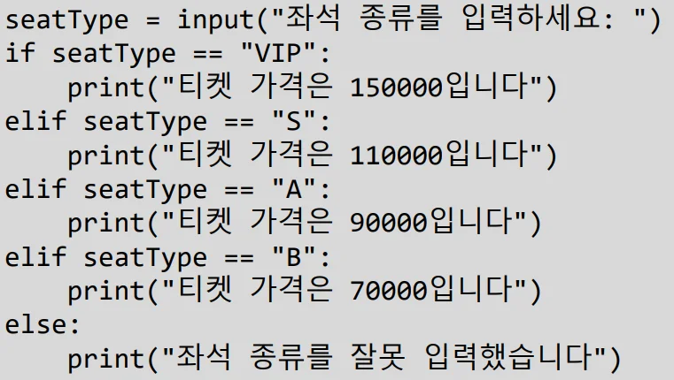
인터프리터, 컴파일러(소스 코드→ Build → 실행 파일) Build 란?
- 컴퓨터는 근본적으로는0과1밖에 모릅니다. 우리가 작성하는 코드들은 거의 대부분 고급 언어를 사용하기 때문에 결국에는 컴퓨터(CPU)가 이해할 수 있도록 번역이 필요
- 컴퓨터가 이해하는 언어를 기계어라고 하는데, 우리가 만든 소스 코드가 컴퓨터 입장에서는 해외판 책이 되는 것이고, 이 책을 기계어(machine code)로 번역하여 컴퓨터에서 이해할 수 있는, 즉 실행 가능한 파일로 만드는 과정을 빌드(Build) 라고 한다. 고급 언어: Python, Java 등 대부분의 프로그래밍 언어 저급 언어: 어셈블리 어, 기계어, C/C++(관점에 따라 저급 언어로 보거나 고급 언어로 봄)
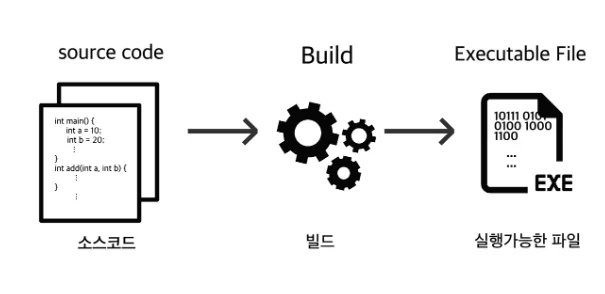
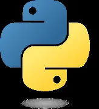
인터프리터, 컴파일러(소스 코드→ Build → 실행 파일)
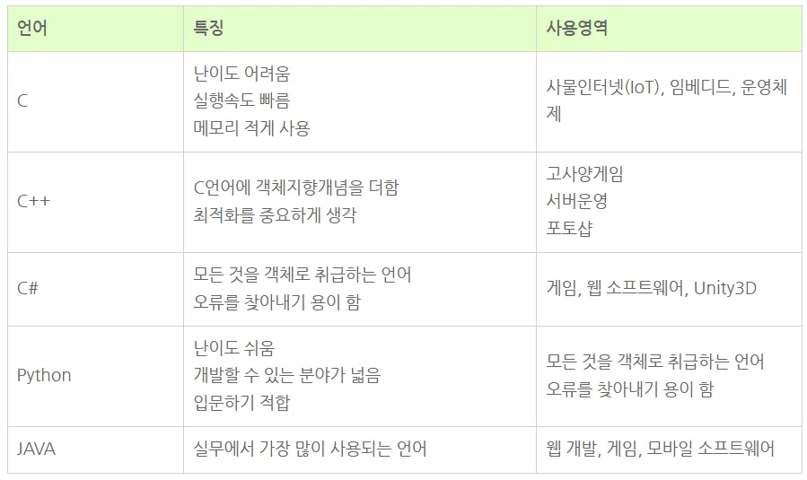
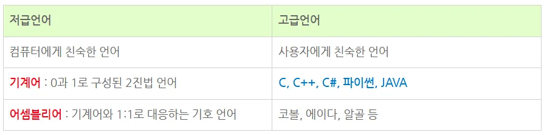
인터프리터, 컴파일러(소스 코드→ Build → 실행 파일)
- 인터 프리 터 소스 코드를 빌드해서 번역물(실행 파일 등)을 만드는 것과 다르게 한 줄씩 해석해서 실행 (Python, JavaScript)
- 컴파일러 컴파일러는 전체 소스 코드를 한 번에 기계어 코드로 번역한 후, 실행 가능한 파일을 생성합니다. 이 과정에서 모든 코드가 기계어로 번역되므로, 실행 전에 한 번의 컴파일이 필요합니다. (C, C++, Java) 질문1 : 코딩이란 무엇인가? 질문2 : 파이썬의 인터 프린터 언어로서 가진 특징은 무엇인가? 질문3 : 인터 프린터 언어로서 머신 러닝/딥 러닝에서 가진 장점은 무엇인가? 둘 다 기계어로 번역하는 도구

XML이란 XML이란 Extensible Markup Language(XML)를 사용하면 공유 가능한 방식으로 데이터를 정의하고 저장할 수 있습니다. XML은 웹 사이트, 데이터베이스 및 타사 애플리케이션과 같은 컴퓨터 시스템 간의 정보 교환을 지원합니다. 사전 정의된 규칙을 사용하면 수신자가 이러한 규칙을 사용하여 데이터를 효율적으로 정확하게 읽을 수 있으므로 모든 네트워크에서 데이터를 XML 파일로 손쉽게 전송할 수 있습니다. +유연한 애플리케이션 설계 XML을 사용하면 애플리케이션 디자인을 편리하게 업그레이드하거나 수정할 수 있습니다. 많은 기술, 특히 최신 기술에는 기본 제공XML 지원이 함께 제공됩니다. XML 데이터 파일을 자동으로 읽고 처리할 수 있으므로 전체 데이터 베이스를 다시 포맷하지 않고도 변경할 수 있습니다. XML이 중요한 이유는 무엇인가요? XML(Extensible Markup Language)은 데이터를 정의하는 규칙을 제공하는 마크업 언어입니다. 다른 프로그래밍 언어와 달리XML은 자체적으로 컴퓨팅 작업을 수행할 수 없습니다. 대신 구조적 데이터 관리를 위해 모든 프로그래밍 언어 또는 소프트웨어를 구현할 수 있습니다. -> ROS에서XML의역할 ROS의 패키지 빌드 및 의존성 관리를 해 준다. *후에ROS에서XML 사용 시 해당 내용 참고, Colab의markdown과비교
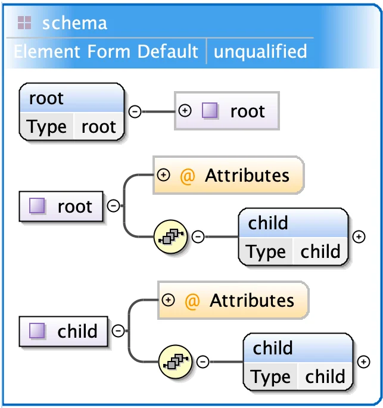
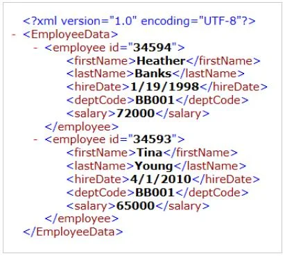
Web동작 방식 HTTP 프로토콜 작동 HTTP는OSI(Open Systems Interconnection) 네트워크 통신 모델의 애플리케이션 계층 프로토콜입니다. HTTP는 여러 유형의 요청과 응답을 정의합니다. 예를 들어, 웹 사이트의 일부 데이터를 보려는 경우HTTP GET 요청을 전송합니다. 연락처 양식 작성과 같은 일부 정보를 전송하려는 경우HTTP PUT 요청을 전송합니다. 마찬가지로, 서버는 숫자 코드 및 데이터 양식으로 다양한 유형의HTTP 응답을 전송합니다. 다음은 몇 가지 예입니다. 200 - OK(정상) / 400 - Bad request(잘못된 요청) / 404 - Resource not found(리소스를 찾을 수 없음) 1,2 사용자가 웹 브라우저에 웹 페이지의URL 주소를 입력한다.
- 웹 브라우저는URL 주소 중에서 도메인 네임(domain name) 부분을DNS 서버에서 검색한다.
- DNS 서버에서 해당 도메인 네임에 해당하는IP 주소를 찾고 사용자가 입력한URL 정보와 함께 전달한다.
- IP 주소와URL 정보는HTTP 프로토콜을 사용하여HTTP 요청 메시지(HTTP Request)를 생성한다.
- 이렇게 생성된HTTP 요청 메시지는TCP 프로토콜을 사용하여 인터넷을 거쳐 해당IP 주소의 컴퓨터로 전송된다.
- 도착한HTTP 요청 메시지는HTTP 프로토콜을 사용하여 웹 페이지URL 정보로 변환된다.
- 웹 서버는 도착한 웹 페이지URL 정보에 해당하는 데이터를 검색한다.
- 검색된 웹 페이지 데이터는 또다시HTTP 프로토콜을 사용하여HTTP 응답 메시지(HTTP Response)를 생성한다.
- 이렇게 생성된HTTP 응답 메시지는TCP 프로토콜을 사용하여 인터넷을 거쳐 원래 컴퓨터로 전송된다.
- 도착한HTTP 응답 메시지는HTTP 프로토콜을 사용하여 웹 페이지 데이터로 변환된다.
- 웹 브라우저는 변환된 웹 페이지 데이터를 출력한다.
네트워크와 통신(IPV4, IPV6, 소켓, 노드, Hub, TCP, UDP) 윈도우 네트워크 환경 설정에서 볼 수 있는 화면 ROS에서 통신의 의의 ROS는 각 노드 간에service, topic, action 같은 통신 인터페이스를 제공한다. 통신에 대한 이해도가 바탕이 되어야ROS의 구조, 원리, 의의를 이해할 수 있다. (각 인터페이스의 역할에 대해선ROS 강의에서 후술 예정)
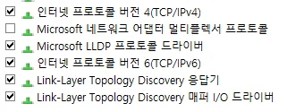
네트워크와 통신(IPV4, IPV6, 소켓, 노드, Hub, TCP, UDP) 인터넷 프로토콜(IP)이란? 인터넷 프로토콜(IP)은 데이터 패킷이 네트워크를 통해 이동하고 올바른 대상에 도착할 수 있도록 데이터 패킷을 라우팅하고 주소를 지정하기 위한 프로토콜 또는 규칙의 집합입니다. 인터넷을 통과하는 데이터는 패킷이라고 하는 더 작은 조각으로 나뉩니다. IP 정보는 각 패킷에 첨부되며, 이 정보는 라우터가 패킷을 올바른 위치로 보내는 데 도움이 됩니다. 인터넷에 연결하는 모든 장치나 도메인에는IP 주소가 할당되며, 패킷이 연결된IP 주소로 전달되면 데이터가 필요한 곳에 도착합니다. IPv4와IPv6의 차이점? IPv4와IPv6는 인터넷 프로토콜(IP) 주소 지정 시스템의 두 가지 버전입니다. IP는 인터넷을 통한 데이터 교환을 제공하는 일련의 통신 규칙입니다. 인터넷의 핵심은 네트워킹 기술을 통해 서로 데이터를 공유하는 수십억 개 디바이스의 집합체입니다. IP는 넘버 링 시스템을 사용하여 연결된 모든 디바이스에 고유한 식별 번호 또는 주소를 부여합니다. IPv4는32비트 주소 형식을 사용하며40억 개 이상의 주소 공간을 수용할 수 있습니다. 인터넷 및 사물 인터넷(IoT) 시스템의 확장으로 인해IPv4의 주소 지정 범위가 충분하지 않은 것으로 입증되었습니다. 128비트 주소 형식을 사용하고1x1036개 이상의 주소를 수용할 수 있는IPv6로 단계적으로 대체되고 있습니다. 윈도우에서 해당 옵션의 속성 설정 일반적으로 네트워크를 연결할 때 자동으로IP를 할당하여 사용한다. 그러나ROS에서 네트워크 구축 과정에서 고유IP연결이 필요해 해당 옵션을 조정할 필요가 있다(물론 우분투에서 조정한다)
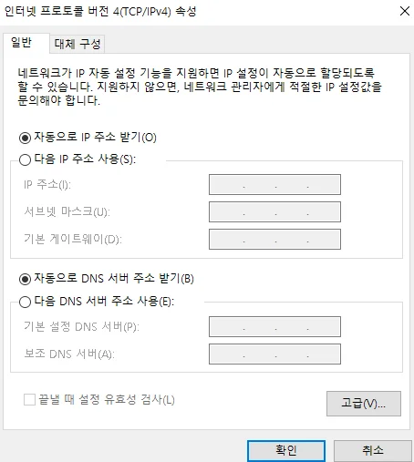
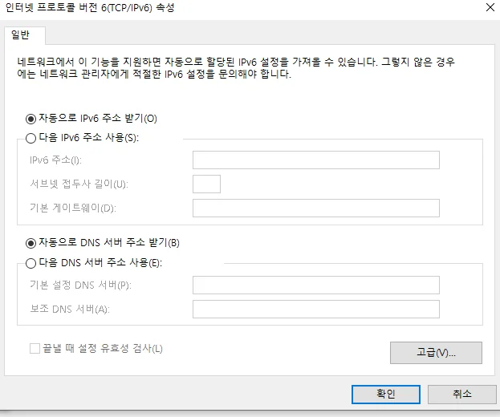
네트워크와 통신(IPV4, IPV6, 소켓, 노드, Hub, TCP, UDP) 노드(Node) 재분배 지점 또는 통신 종단 점이다. 즉, 네트워크의 기본 요소인 지역 네트워크에 연결된 컴퓨터와 그 안에 속한 장비들을 통틀어 하나의 노드라고 한다. *ROS에서도노드라는 단위를 사용하는데 이 둘은 엄연히 다른 개념이므로 헷갈리지 않도록 주의한다. 소켓(Socket) 컴퓨터 간의 데이터 전송을 위한 인터페이스 허브(Hub) 컴퓨터와 컴퓨터 사이, 즉 네트워크 장비와 장비를 연결해 주는 기능을 수행하는 장비 모뎀(MOdulator and DEModulator) 신호를 변조하여 송신하고 수신 측에서 원래의 신호로 복구하기 위해 복 조하는 장치 TCP 응용 프로그램이 데이터를 교환할 수 있는 네트워크 대화를 설정하고 유지하는 방법을 정의하는 표준 UDP IP를 사용하는 네트워크 내에서 컴퓨터 간에 메세지들이 교환될 때 제한된 서비스만을 제공하는 통신 프로토콜. TCP의대 안으로 쓰임
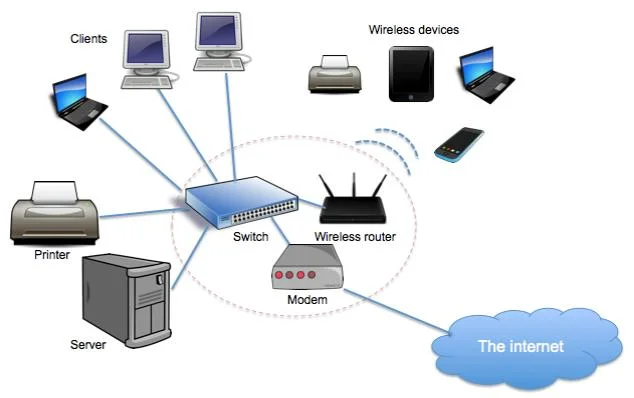
네트워크와 통신(IPV4, IPV6, 소켓, 노드, Hub, TCP, UDP) TCP (Transmission Control Protocol) UDP (User Datagram Protocol) 신뢰성 높음 낮음 속도 낮음 높음 전송 방법 패킷이 순서대로 전달 패킷이 스트레이트로 전달 오류 감지 및 수정 있음 없음 혼잡 도 제어 있음 없음 전송 인정 있음 오직 체크 썸만 연결 방식 연결 지향적 비연결성 사용 예시 웹(http, https), 이메일 전송(SMTP), 파일 전송)FTP) 실시간 비디오 스트리밍, 온라인 게임, 음성 통화(VoIP)
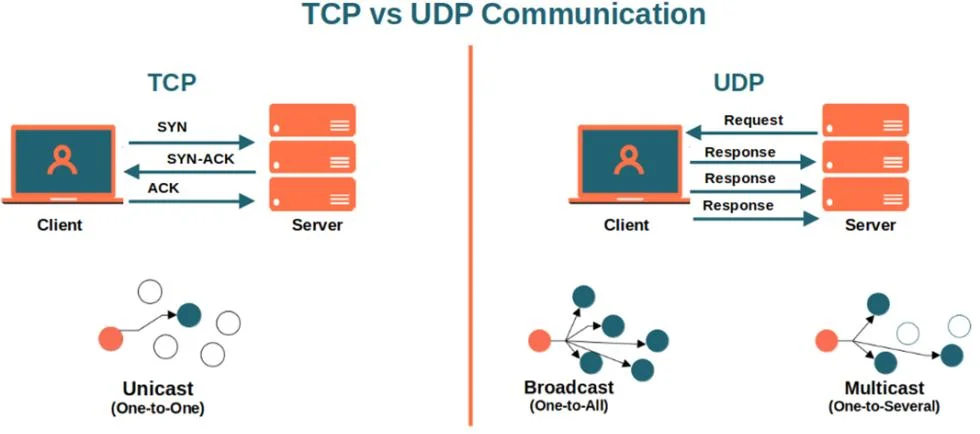
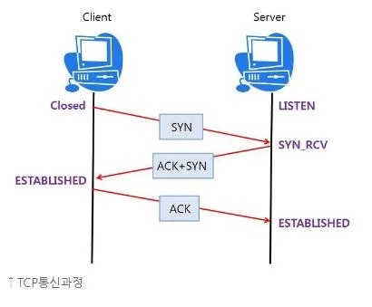
소켓 프로그래밍 실습 소켓 컴퓨터 간의 데이터 전송을 위한 인터페이스 네트워크 소켓 통신 실습 추후ROS에서 통신으로topic 같은 통신을 테스트는 하는 내용이 있음 해당 실습은ROS가 아닌 파이썬으로 소켓 통신 프로그래밍을 실습하고, 이 실습과 유사한 내용이ROS에서 다시 배우게 되기 때문에 이해를 하고 넘어가자 에코 서버 클라이언트가 전송하는 데이터를 그대로 되돌려 전송해 주는 기능의 서버. 즉, 클라이언트가 보낸 데이터를 수신해서 동일한 데이터를 다시 클라이언트에게 송신한다 에코 클라이언트(Echo Client) 클라이언트가 전송하는 데이터를 그대로 되돌려 전송해 주는 기능의 서버. 즉, 클라이언트가 보낸 데이터를 수신해서 동일한 데이터를 다시 클라이언트에게 송신한다
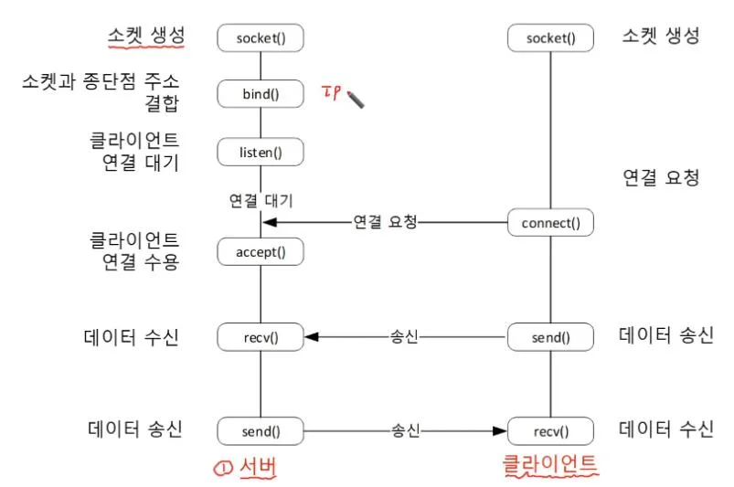
네트워크, 통신과 프로그래밍 소켓의 통신 과정 실제 코드
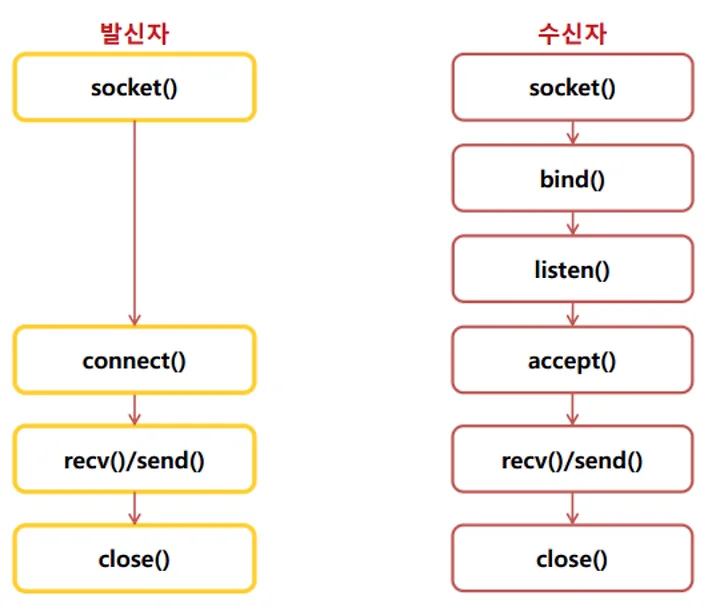
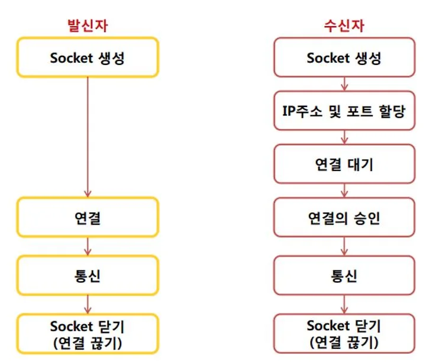
네트워크, 통신과 프로그래밍 socketServer.py
네트워크, 통신과 프로그래밍 socketClient.py
네트워크, 통신과 프로그래밍 fileSend.py
네트워크, 통신과 프로그래밍 fileReceive.py
Socket Programming ※ Python으로 다른 프로그램 실행
Socket Programming name
- 파이썬에서 아주 중요한 개념이고 자주 사용되는 내장 변수
- 파이썬 인터 프리 터가 자동으로 설정해 주는 특별한 변수
- 파이썬이 실행될 때마다 파이썬은 이 변수에 값을 넣어 줌
- 파이썬 파일이 직접 실행되면__name__에는“main” 값이 입력됨
- 다른 파일에서import되면“모듈(파일)이름“ 이 입력됨
- 모듈화를 하고, 테스트 코드와 기능 코드를 분리함
- 프로그램의 진입 점(Entry Point)
Socket Programming argsExample1.py
Socket Programming argsExample2.py
Socket Programming argsExample3.py
Socket Programming tcpServer.py
Socket Programming tcpClient.py
Socket Programming udpServer.py UDP포트 점유 중인 프로세스kill UPD 포트 다시binding시에러 발생. 재사용하게해 주는 코드 추가
Socket Programming udpClient.py
Socket Programming chattingServer.py
Socket Programming chattingClient.py
Socket Programming 서버ip주소를argument로전달
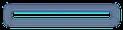
Socket Programming $ pip install pyinstaller
Socket Programming ※ Python 실행 프로그램 만들기
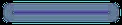
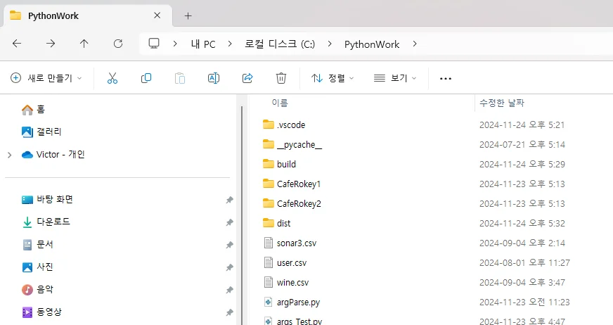
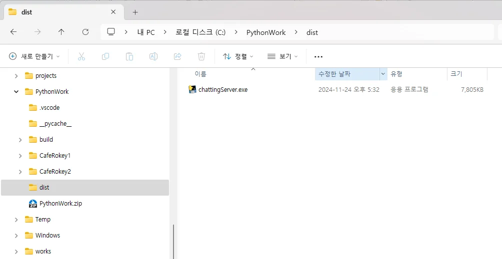
Socket Programming
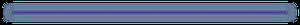
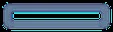
Socket Programming
OSI7 Layer, 프로토콜(RS-232C, RS-485, Ethernet, TCP/UDP, IP) 네트워크 통신의 대표적인 모델 OSI7 Layer, TCP/IP OSI(Open Systems Interconnection) 모델은 국제 표준화 기구(ISO)가정의 한 통신을 위한 프로토콜 계층 구조로, 네트워크 통신을 7개의 레이어 구조로 나눈 이론적 모델. 서로 다른 시스템 간의 통신을 원활하게하기 위한 표준 모델로, 각 레이어가 독립적으로 작동하며, 데이터 전송 과정에서 다양한 작업을 수행 Data가목적지까지 가는 경로를 결정하는 역할 IP주소를 사용해 라우팅하는 작업 수행 물리 계층에서 데이터를 수신한 후 오류 검출과 제어를 담당 MAC 주소를 사용해 물리적인 연결을 관리 데이터를 실제로 전송하는 하드웨어적인 부분을 담당. 전기 신호나 광 신호를 이용해 DATA를 변환하여 전송. 케이블, 스위치, 허브 같은 장비가 여기 속함
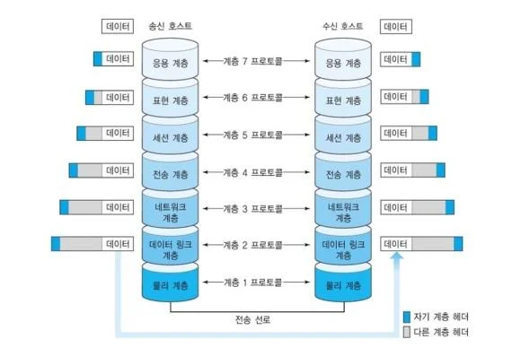
OSI7 Layer, 프로토콜(RS-232C, RS-485, Ethernet, TCP/UDP, IP) IP Address, Routing MAC Address
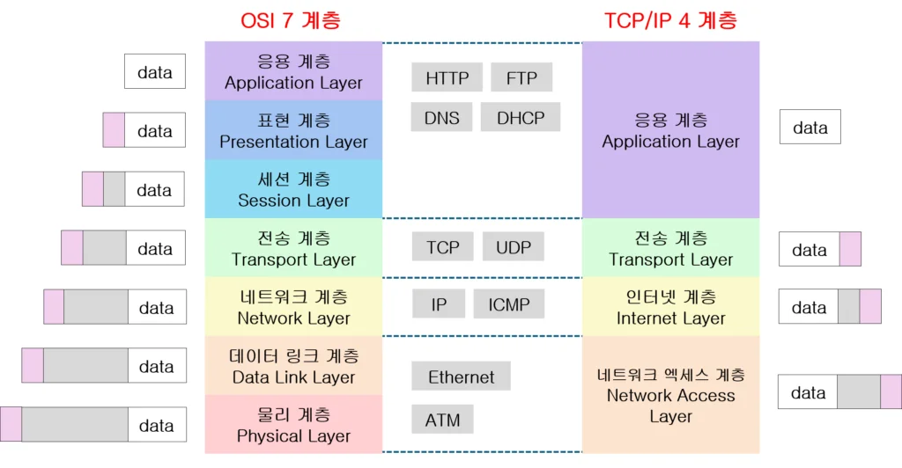
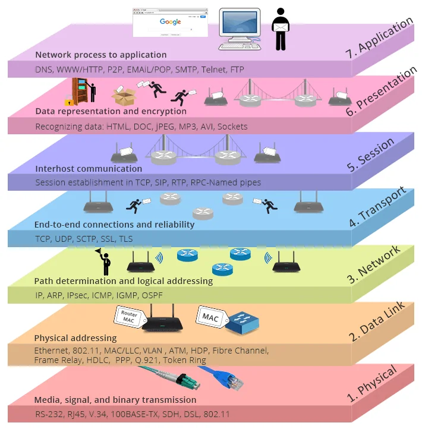
OSI7 Layer, 프로토콜(RS-232C, RS-485, Ethernet, TCP/UDP, IP) RS-232C
- 직렬 통신 중 하나 과거에는 주로 모니터를 연결할 때 쉽게 볼 수 있었다.(최근에는HDMI 케이블이 대부분의 모니터를 연결하는 데 쓰고 있다.)
- 1:1 통신이며1:N의 통신은 되지 않는다.
- 단방향 통신이며 노이즈에 강하고 간단한 통신 방식이기에 현재도 산업용 기기에서 데이터 교환하는 방식으로 쓰이고 있다. RS-232 RS-485 전송 방식 단방향 또는 양방향 양방향 선의 수 3선또는9선 2선또는4선 통신 거리 최대15m 최대1,200m 속도 최대115200bps 최대10Mbps 인터페이스 단일 장치1 : 1 여러 장치 최대32개 신뢰성 Noise에민 감긴 거리 성능 저하 Noise에 강하고 긴 거리 안정적 구성 단일 송신기와 수신기 멀티 드롭, 여러 장치 가격 상대적으로 저렴 상대적으로 비쌈
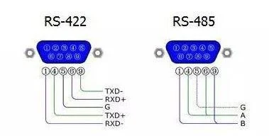
OSI7 Layer, 프로토콜(RS-232C, RS-485, Ethernet, TCP/UDP, IP) UART는UART(Universal Asynchronous Receiver/Transmitter, 범용 비동기 송수신기)의약자이며
- 두 장치 사이에서 직렬 데이터를 교환할 때 적용되는 프로토콜(규칙 세트)을 정의합니다.
- UART는 매우 간단하며 양방향으로 데이터를 송신 및 수신하기 위해 송신기와 수신기 사이에 두 개의 와이어만 사용합니다.
- 와이어 양 끝단은 접지 연결이 되어 있습니다. UART를 이용한 통신은Simplex(단방향 통신)(데이터가 한 방향으로만 전송됨), Half- duplex(반이중)(한 번에 한 쪽만 전송 가능) 또는Full-duplex(전이중)(양쪽이 동시에 전송 가능) 방식이 있습니다.
- UART에서 데이터는 프레임 형태로 전송됩니다.
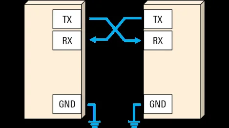
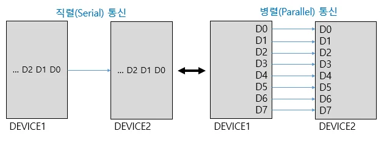
OSI7 Layer, 프로토콜(RS-232C, RS-485, Ethernet, TCP/UDP, IP) RS-485
- 먼 거리에서 데이터를 전송해야하는 장치 간의 통신 중 하나인 직렬 통신의 종류
- 하나의 버스에 최대32개의 송신기와32개의 수신기를 연결할 수 있고 여러 장치를 연결하여 네트워크를 구성할 수 있다. 장거리 통신 가능 이후 실습 시간에 사용하는 터 틀 봇도 이러한 방식으로 조립되어 있다. 조립된 상태이므로 직접 연결할 필요는 없으나 확인만 해 보자 RS-485 2wired RS-485 4wired 배선수 2개(송신/수신 공유) 4개(송신과 수신 분리) 통신 방식 단방향(송신과 수신 번갈아) 양방향 동시 데이터 전송 속도 상대적으로 낮음 상대적으로 빠름 배선 및 설치 간단하고 저렴 배선이 복잡 설치 번거로움 장점 간단한 배선, 멀티 드롭 연결 양방향 통신, 빠른 응답 단점 단방향 통신, 속도 제한 배선 복잡, 설치 비용
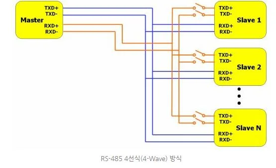
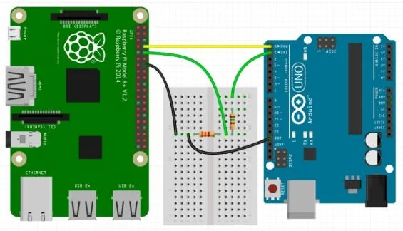
OSI7 Layer, 프로토콜(RS-232C, RS-485, Ethernet, TCP/UDP, IP) RS-485 먼 거리에서 데이터를 전송해야하는 장치 간의 통신 중 하나인 직렬 통신의 종류 실습에 사용하는 터 틀 봇 터 틀 봇의 부품인OpenCR OpenCR은 로봇의 센서, 모터, 엑츄에이터를 제어하기 위해 설계된 마이크로 컨트롤러 보드 빨간색 표시한 부분이Txd, Rxd 이 약자로 표기되어 있다
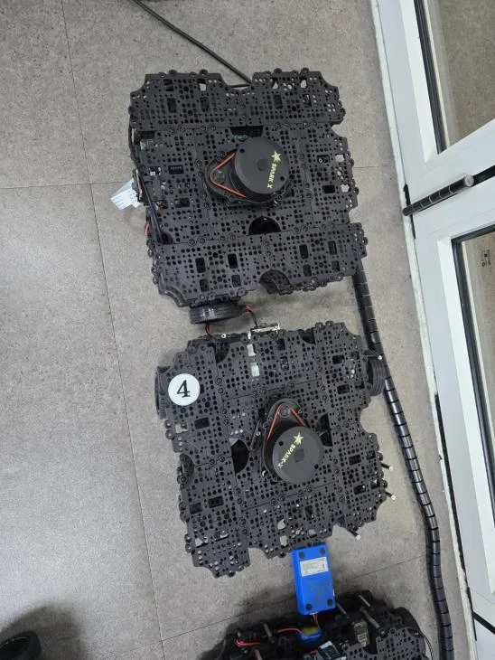
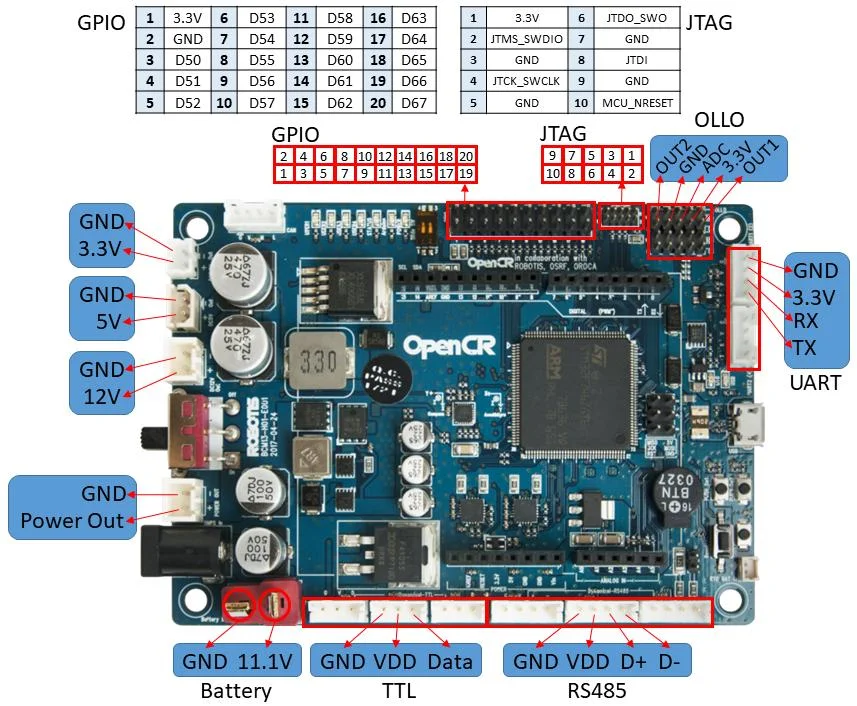
RS-485와센서 다양한 센서들과 액 츄에 이 터들이RS-485 통신을 지원한다. (3차 강의 자료 참고) 자세히 보면RS-485 통신의Rxd, Txd 표시가 있다. 보통핀3개가Rxd, Txd, Gnd(접지)로 구성되어 있다 +라즈베리 파이 보드나 아두이노 보드에는Rxd, Txd 커널이 하나만 있다. 이때 여러 개의 센서를 해당 보드에 연결할 때 병렬로 연결해서 해결할 수 있다. *RS-485 통신 특징 하나의 버스에 최대32개의 송신기와32개의 수신기를 연결할 수 있다.

OSI7 Layer, 프로토콜(RS-232C, RS-485, Ethernet, TCP/UDP, IP) Ethernet 이더넷은 컴퓨터 네트워크 기술 중 하나로, CSMA/CD라는 프로토콜을 사용하는 통신 방식을 채택한다. 일반적으로LAN, MAN, WAN에서 가장 많이 활용되는 기술 규격이다 윈도우에서 쉽게 찾아볼 수 있는 이더넷, 유선 연결이 더 넷 두산 협동 로봇은 이러한LAN 케이블로 컴퓨터와 협동 로봇을 연결할 수 있다
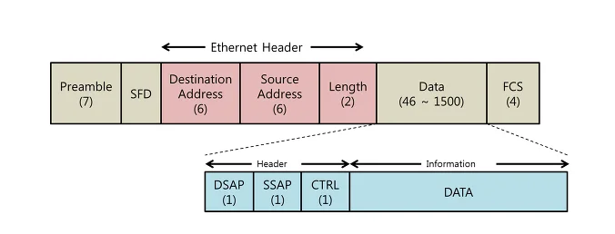
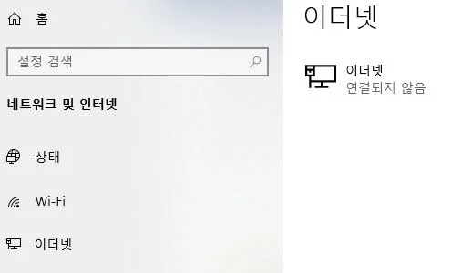
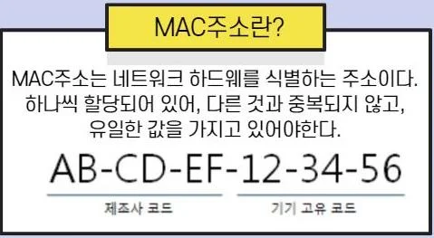
OSI7 Layer, 프로토콜(RS-232C, RS-485, Ethernet, TCP/UDP, IP)
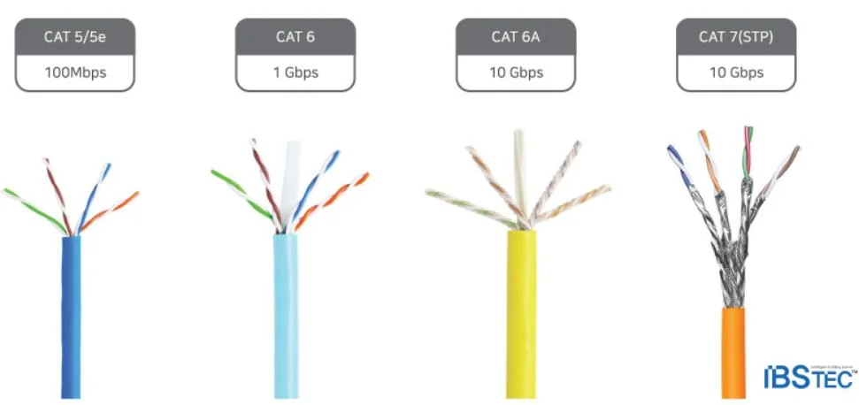
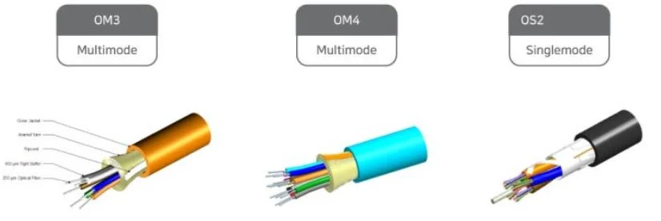
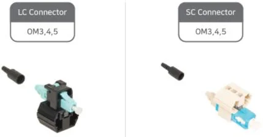
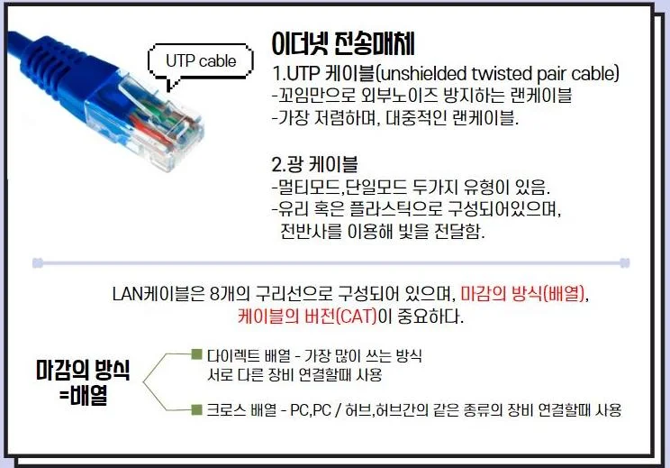
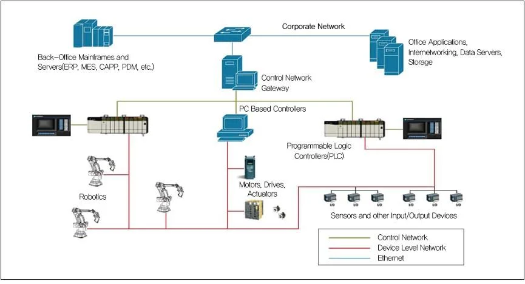
OSI7 Layer, 프로토콜(RS-232C, RS-485, Ethernet, TCP/UDP, IP)
OSI7 Layer, 프로토콜(RS-232C, RS-485, Ethernet, TCP/UDP, IP)
+부록 기타 통신 블루투스 통신이란 디지털 통신 기기를 위한 개인 근거리 무선 통신 산업의 표준이다. 짧은 거리라 데이터 통신에 제한이 있다. 다중 제어/ 중앙화를 지향하는ROS와는 어울리지 않지만 블루투스로 향후 실무 프로젝트에서 쓰이는 터 틀 봇과 비슷하게 사용하는 제품이 있다. Long Range의약자로 광범위한 커 버리지와 적은 대역 폭, 긴 배터리 수명과 저전력 등의 특징을 갖춘IoT 전용 네트워크 기술로 저전력 장거리 통신 기술이다.